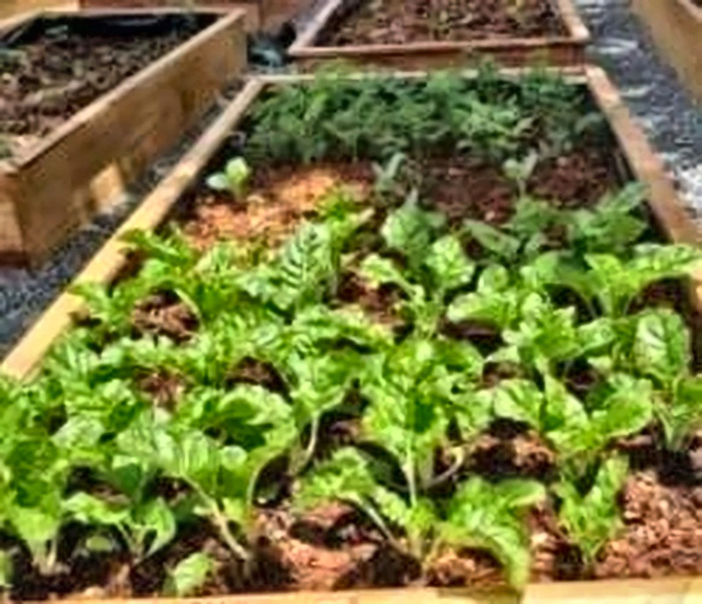

About Pinnacle
Growing agriculture.
Building futures.

Pinnacle Agribusiness Co. Ltd is an agribusiness consultancy firm dedicated to empowering farmers and agricultural businesses to achieve enhanced productivity and profitability.
“Professional agribusiness solutions for enhanced productivity and profits, built on practical, on-the-ground experience.”
Who we are
A story rooted in practical agriculture.
Pinnacle Agribusiness Co. Ltd was first conceived on 8th July 2019 as a digital information-based platform, under the name Golden Green Thumbs Africa, with the goal of promoting farming as a business and connecting farmers to commodity markets and up-to-date agro-technique information.
It was later rebranded into a broader agribusiness consultancy, introducing new services including backyard gardening, seedling production, greenhouse construction, piggery and agribusiness advisory. The firm today operates as a partnership business, in the process of formal incorporation under the laws of the Government of Uganda.
Today, the company combines professional advice with practical on- and off-farm support, connecting agronomy, engineering, livestock and market expertise under one roof.


Who we serve
From smallholder plots
to commercial exporters.
Our clients include subsistence farmers, commercial farmers, NGOs and companies. Our goal is to widen our reach across the East African Community and beyond.
Target markets: Uganda · South Sudan · Kenya · Tanzania · Rwanda · Burundi (East African Community)
Vision & Mission
A market-driven future
for African agriculture.
Vision
We exist to provide unmatched professional agribusiness solutions for enhanced productivity and maximisation of profits.
Mission
To transform African agriculture by empowering farmers through market-driven solutions, innovative technologies and comprehensive capacity building, while promoting sustainable practices.
Company objectives
What we're working toward.
Encourage sustainable agriculture practices across every project we take on.
Expand into new markets with agriculture as the main economic activity.
Grow and increase market share by keeping our services affordable.
Consistently supply premium services through experienced, capable staff.
Reduce hunger and poverty through increased agricultural productivity.
Enhance farmer profitability through market-driven agricultural practices.
Create meaningful job opportunities across the agricultural value chain.
Core values
Principles behind every engagement.
Innovation 01
Promoting new and more efficient methods of crop, animal and agricultural practice to increase productivity.
Safety 02
Protecting the safety of our clients, our people and the environment in every activity we undertake.
Sustainability 03
Building sustainable, socially responsible practices into the way we do business.
Quality 04
Meeting high industry standards for product quality, safety and reliability.
Customer focus 05
Providing excellent service to build strong, lasting business relationships.
Integrity 06
Cultivating transparency, accountability and responsible corporate citizenship.
Partnership 07
Fostering long-term, mutually beneficial relationships across the value chain.
Meet the people behind Pinnacle